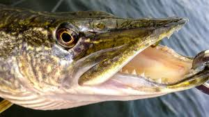
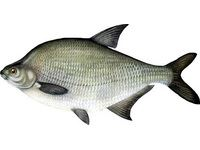

Лящ.


Одна з бажаних здобичь рибалки. По-перше, тому, що має пристойні розміри: в наших водоймах лящі довжиною 35-40 см при вазі 1-2 кг не рідкість; є і більш солідні екземпляри до 5 і більше кг; а підлящики (молоді лящі) вагою 400-700 г на гачку рибалки любителя і зовсім звичайне явище. По-друге, полювання за лящем (особливо за запеклим) пов’язана з цілою низкою складнощів, подолання яких викликає справжню насолоду. І по-третє, ловля ляща рідше, ніж скажімо, полювання за головнем або жерехом, буває безрезультатною. Лящ легко запам’ятовується зовнішністю.Тіло його дуже високе, сильно стисле з боків. Дрібні лящі покриті лускою сріблястого кольору, у великих – луска темна, велика, виблискували золотом. Всі плавники у нього темно-сірі. Великий хвостовий плавець розділений виїмкою на дві лопаті – верхню і нижню, з яких нижня більша. Голова ляща маленька, маленькі у нього і очі із золотистою радужкою. Своєрідний у цієї риби рот: він маленький і висувний. Відшукуючи на дні їжу, лящ стає головою вниз, приймає майже вертикальне положення, висуває рот і посилає в грунт сильну водяний струмінь. Він розмиває поверхню дна і оголює що ховаються в мулі личинок, дрібних молюсків, які лящ потім тим же хоботом підбирає. Не гидує він і рослинною їжею. Живе зграями, які розбрідаються лише на короткий літній час відразу після нересту, а восени групуються знову. Великих міграцій у пошуках їжі не робить: годується зазвичай поблизу від місць постійного проживання. Тримається в основному в тихих і глибоких ямах, переважно з мулистих або галькові дном, але часто виходить і на течію, не уникаючи і кам’янистого дна. В озерах жирує, як правило, серед заростей трави. Про це навіть вірші складені: «Шукай ляща у хвоща, йоржа – в очереті, а окунь стоїть до осоки боком». Визначити місце проживання ляща можна за характерною грою: спочатку він висовує з води голову, потім спинний плавник і нарешті хвіст; потім ударивши хвостом по воді, пішов вниз. Статевозрілим лящ стає в 5-7 років при довжині близько 30 см. Нереститься при температурі 12-16 °С, тобто наприкінці травня початку червня. Ікру відкладає на дрібних місцях серед водної рослинності. Відбувається це з гучним сплеском і вистрибуванням з води. Через 10-15 днів після нересту у ляща починається інтенсивний жор. У середині літа він слабшає і знову посилюється до початку осені. У великих водоймах лящ харчується і взимку. На тиховоддя ляща краще ловити поплавковою вудкою на попередньо принаджених місцях. Спуск треба відрегулювати так, щоб насадка лежала на дні, а грузило трохи не вистачало до нього. Кращою насадкою на весь сезон відкритої води є пучок гнойових хробаків. Непогано бере лящ також на горох, кубики каші та інші рослинні насадки. Найбільш характерне клювання ляща коли вертикально стоїть поплавець, а потім лягає на бік. Це означає, схилившись за насадкою лящ взяв її в рот і прийняв горизонтальне положення. У цей час потрібна коротке, але різке підсікання, губи у нього слабкі. Пручається кращий лящ не сильно. А якщо йому дати ковтнути повітря, то й зовсім лягає на бік і не ворушиться. Але витягати його з води треба швидко і обов’язково сачком. На тихому плині добутливим буває лов ляща з підгодівлею проводочною вудкою. При цьому на гачок треба чіпляти міцну насадку, щоб вона не злітала з нього. Найбільше тут підійдуть опариш та личинки комах. На середній і сильній течії, а також на великій глибині слід використати підпуск і кільцівку з насадкою гороху, хлібної м’якушки, кубика каші, пучка черв’яків або декількох опаришів. Причому тут не можна поспішати з підсіканням, треба дати рибі заковтнути насадку, тобто треба вичекати хорошого натягу волосіні. Однак і прогавити моменту підсікання не можна – сам лящ (на відміну від коропа) зачіпляється дуже рідко. Навчитися точно визначати цей момент можна тільки в процесі практики. Причому враховувати треба цілий ряд обставин. Наприклад, невелику насадку лящ бере відразу, а велику – спочатку посмокче; вночі він менш обережний, ніж вдень.